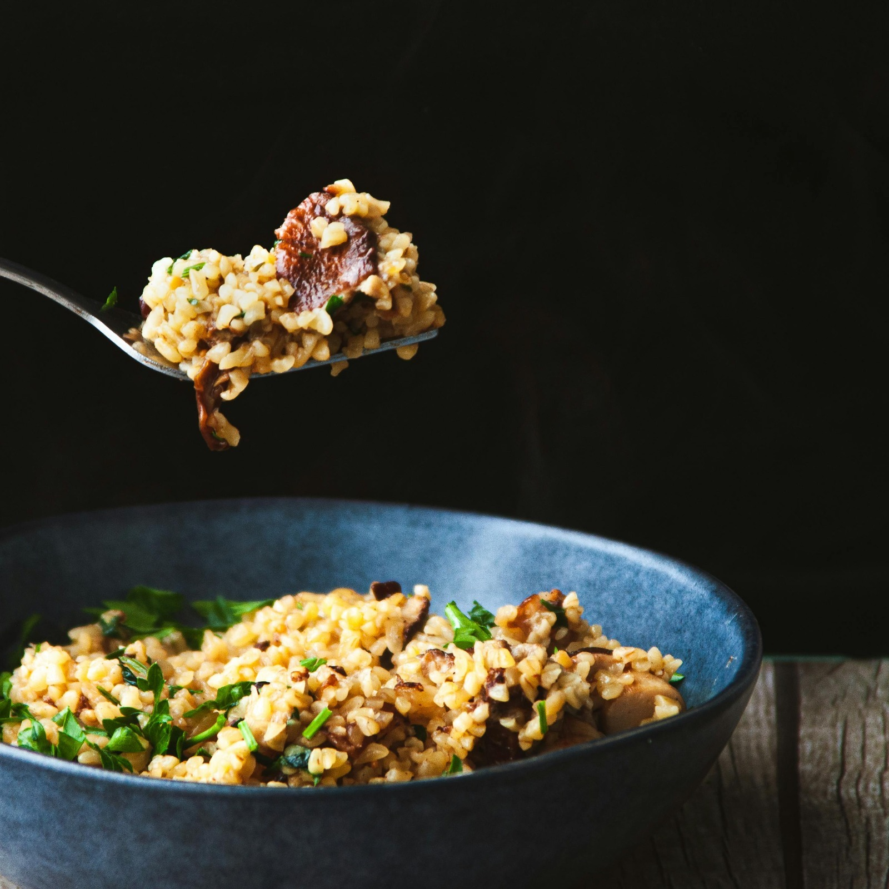
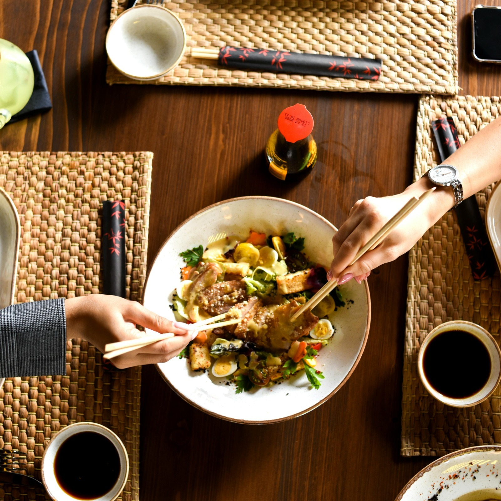
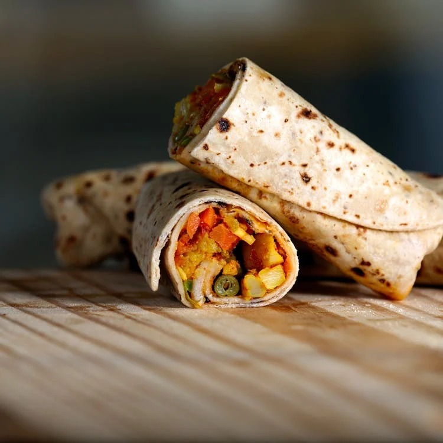
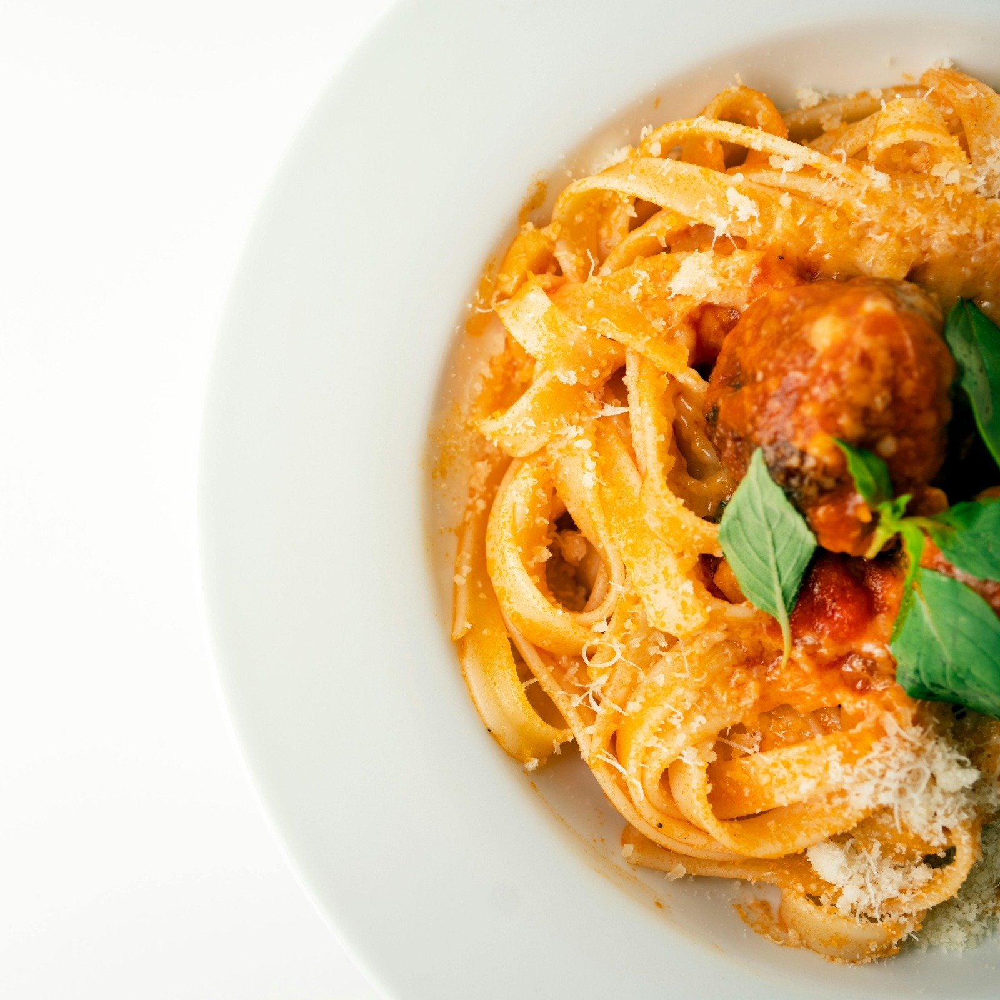
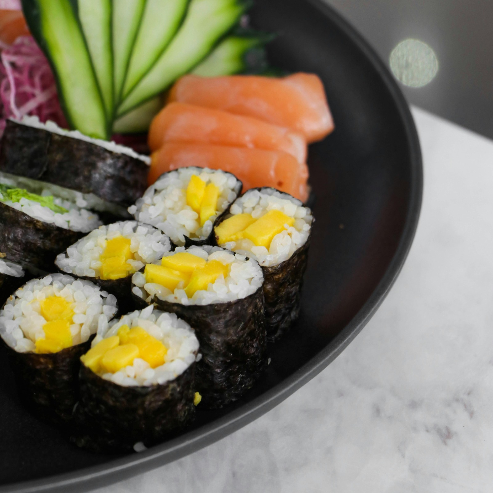
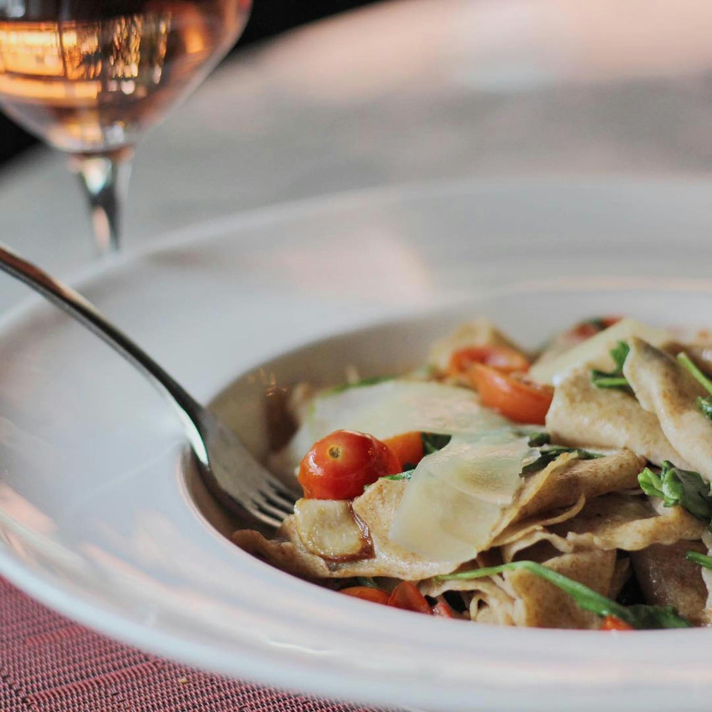

Descubra os segredos da culinária chinesa em nossos cursos especializados,
onde você aprenderá a preparar pratos com ingredientes frescos e técnicas tradicionais.
-Moderado

Culinária Brasileira
Mergulhe na rica gastronomia brasileira com nosso curso, aprendendo a preparar pratos típicos,
como feijoada e acarajé, e descobrindo sabores e tradições únicas.
-Fácil

Culinária Libanesa
Descubra os encantos da culinária libanesa em nosso curso, onde você aprenderá a preparar delícias como homus
tabule e kafta, explorando sabores autênticos e tradições.
-Difícil

Culinária Mexicana
Aventure-se na culinária mexicana, você aprenderá a preparar pratos icônicos como tacos,
enchiladas e guacamole, mergulhando em sabores vibrantes e tradições ricas.
-Fácil

Culiária Italiana
Explore a deliciosa culinária italiana em nosso curso, onde você aprenderá a preparar clássicos como massas frescas, risotos e pizzas,
mergulhando em sabores autênticos e tradições encantadoras.
-Moderado

Culinária Japonesa
Mergulhe na culinária japonesa em nosso curso, onde você aprenderá
a preparar pratos clássicos como sushi, ramen e tempura, explorando técnicas e sabores autênticos dessa rica tradição.
-Difícil
Culinária Tailandesa
Descubra a fascinante culinária tailandesa em nosso curso, onde você aprenderá a preparar pratos como pad thai,
curry verde e tom yum, explorando sabores intensos e aromas exóticos.
-Fácil

Culinária Italiana
Descubra a rica culinária italiana em nosso curso, onde você aprenderá a preparar delícias como massas caseiras, risotos cremosos e pizzas autênticas,
explorando sabores tradicionais e técnicas artesanais.